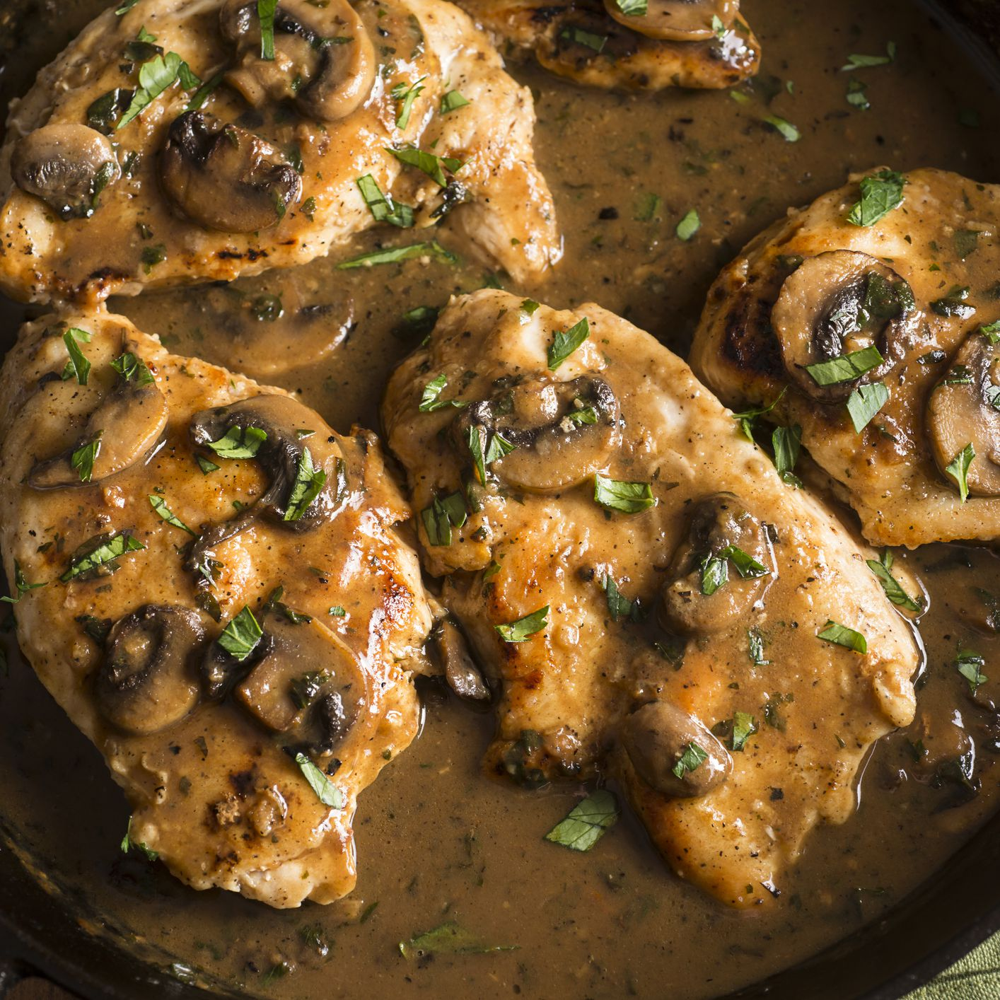

Chicken Marsala

Description
This classy yet simple meal is a show-stopper whether you're trying to make a quick but tasty weeknight meal or impress that special someone. Flavors:Earthy, mushrooms, sweet wine Serves 4.
Cook time: 25 minutes
Prep time: 15 minutes
Total: 40 minutes
Ingredients
- 2 breasts butterflied, bone and skin removed
- 1/4 cup chopped green onion
- 1 cup fresh sliced mushrooms
- 1/3 cup Marsala wine
- salt and pepper to taste
- 1/3 cup heavy cream
- 1/8 cup milk
Steps
- Saute chicken in a large skillet for 15 to 20 minutes, or until cooked through and juices run clear
- Add green onion and mushrooms and saute until soft, then add Marsala wine and bring to a boil
- Boil for 2 to 4 minutes, seasoning with salt and pepper to taste. Stir in cream and milk and simmer until heated through, about 5 minutes.